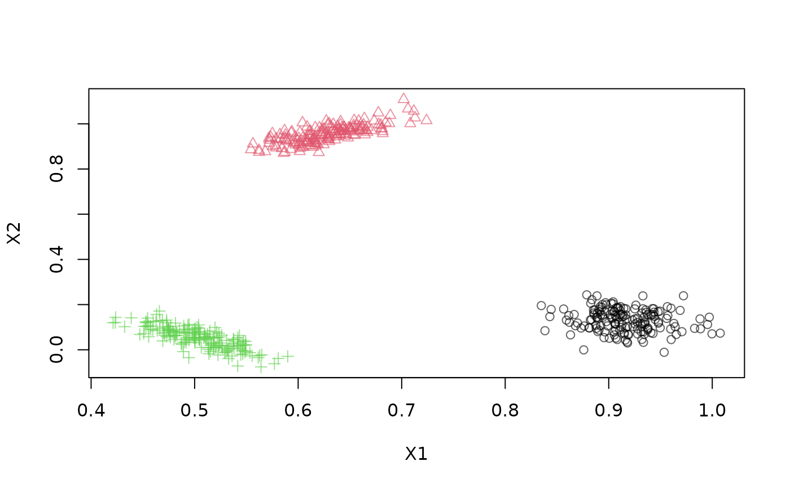
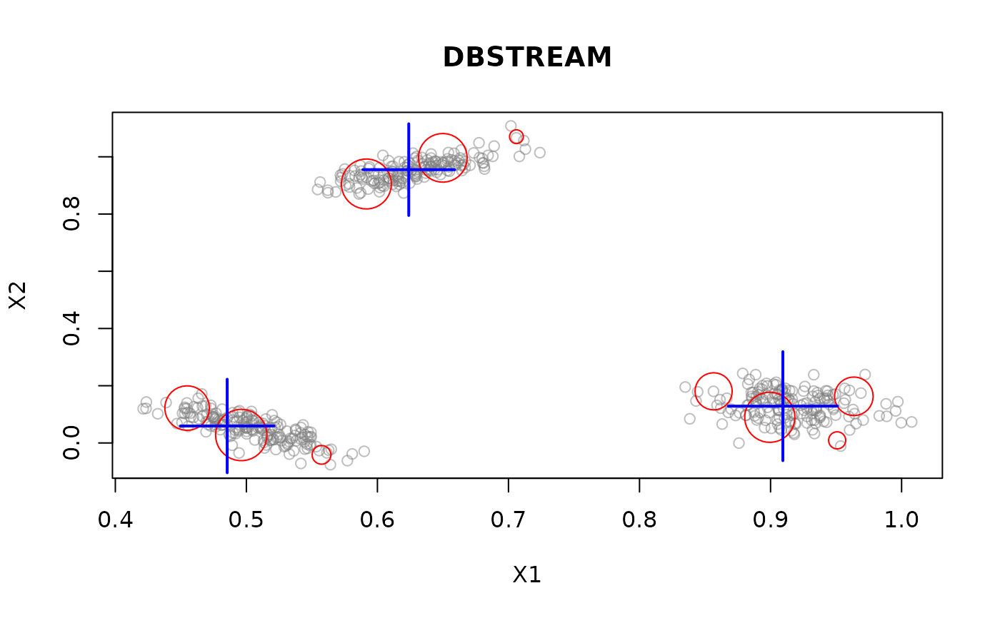
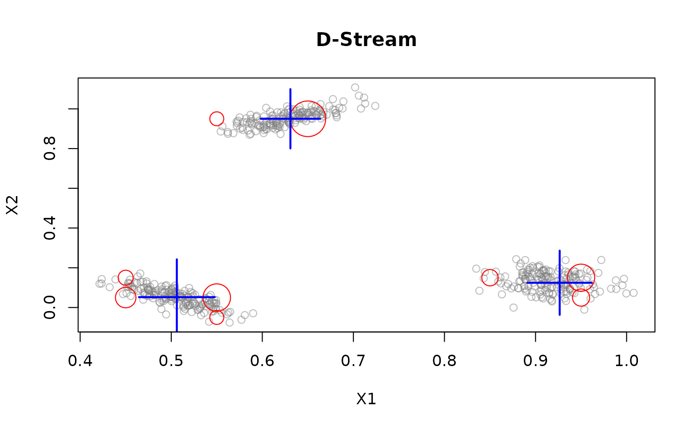
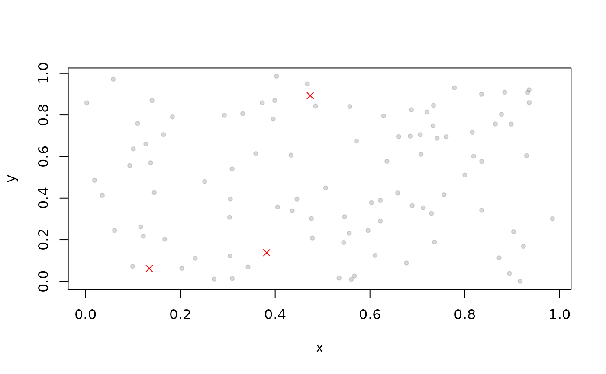

This class provides a data stream interface for data stored in memory as matrix-like objects (including data frames). All or a portion of the stored data can be replayed several times.
Usage
DSD_Memory(
x,
n,
k = NA,
outofpoints = c("warn", "ignore", "stop"),
loop = FALSE,
description = NULL
)Arguments
- x
A matrix-like object containing the data. If
xis a DSD object then a data frame forndata points from this DSD is created.- n
Number of points used if
xis a DSD object. Ifxis a matrix-like object thennis ignored.- k
Optional: The known number of clusters in the data
- outofpoints
Action taken if less than
ndata points are available. The default is to return the available data points with a warning. Other supported actions are:warn: return the available points (maybe an empty data.frame) with a warning.ignore: silently return the available points.stop: stop with an error.
- loop
Should the stream start over when it reaches the end?
- description
character string with a description.
Details
In addition to regular data.frames other matrix-like objects that provide
subsetting with the bracket operator can be used. This includes ffdf
(large data.frames stored on disk) from package ff and
big.matrix from bigmemory.
Reading the whole stream
By using n = -1 in get_points(), the whole stream is returned.
See also
Other DSD:
DSD(),
DSD_BarsAndGaussians(),
DSD_Benchmark(),
DSD_Cubes(),
DSD_Gaussians(),
DSD_MG(),
DSD_Mixture(),
DSD_NULL(),
DSD_ReadDB(),
DSD_ReadStream(),
DSD_Target(),
DSD_UniformNoise(),
DSD_mlbenchData(),
DSD_mlbenchGenerator(),
DSF(),
animate_data(),
close_stream(),
get_points(),
plot.DSD(),
reset_stream()
Examples
# Example 1: store 1000 points from a stream
stream <- DSD_Gaussians(k = 3, d = 2)
replayer <- DSD_Memory(stream, k = 3, n = 1000)
replayer
#> Memorized Stream for Gaussian Mixture (d = 2, k = 3)
#> Class: DSD_Memory, DSD_R, DSD
#> Contains 1000 data points - currently at position 1 - loop is FALSE
plot(replayer)

# creating 2 clusterers of different algorithms
dsc1 <- DSC_DBSTREAM(r = 0.1)
dsc2 <- DSC_DStream(gridsize = 0.1, Cm = 1.5)
# clustering the same data in 2 DSC objects
reset_stream(replayer) # resetting the replayer to the first position
update(dsc1, replayer, 500)
reset_stream(replayer)
update(dsc2, replayer, 500)
# plot the resulting clusterings
reset_stream(replayer)
plot(dsc1, replayer, main = "DBSTREAM")

reset_stream(replayer)
plot(dsc2, replayer, main = "D-Stream")

# Example 2: use a data.frame to create a stream (3rd col. contains the assignment)
df <- data.frame(x = runif(100), y = runif(100),
.class = sample(1:3, 100, replace = TRUE))
# add some outliers
out <- runif(100) > .95
df[['.outlier']] <- out
df[['.class']] <- NA
head(df)
#> x y .class .outlier
#> 1 0.5445857 0.18653315 NA FALSE
#> 2 0.6220062 0.28949525 NA FALSE
#> 3 0.1833125 0.79059693 NA FALSE
#> 4 0.3427605 0.06894763 NA FALSE
#> 5 0.8841958 0.90928265 NA FALSE
#> 6 0.4359995 0.33881426 NA FALSE
stream <- DSD_Memory(df)
stream
#> Memorized Stream
#> Class: DSD_Memory, DSD_R, DSD
#> Contains 100 data points - currently at position 1 - loop is FALSE
reset_stream(stream)
get_points(stream, n = 5)
#> x y .class .outlier
#> 1 0.5445857 0.18653315 NA FALSE
#> 2 0.6220062 0.28949525 NA FALSE
#> 3 0.1833125 0.79059693 NA FALSE
#> 4 0.3427605 0.06894763 NA FALSE
#> 5 0.8841958 0.90928265 NA FALSE
# get the remaining points
rest <- get_points(stream, n = -1)
nrow(rest)
#> [1] 95
# plot all available points with n = -1
reset_stream(stream)
plot(stream, n = -1)
